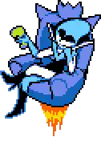
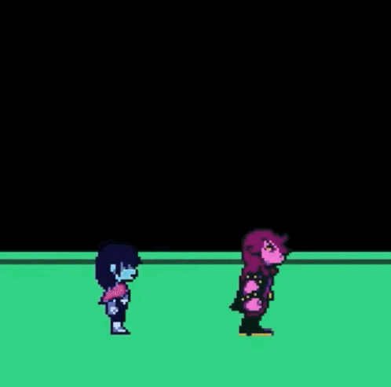
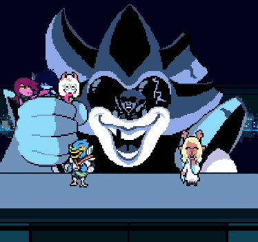

CHAPTER 2 (Normal Route)

Setelah peristiwa menegangkan di malam sebelumnya, Kris terbangun dan berangkat ke sekolah. Susie menunggunya dengan antusias, ingin segera kembali ke dunia fantasi yang mereka temukan. Setelah pelajaran usai, mereka menuju perpustakaan untuk mengerjakan tugas kelompok bersama Noelle (rusa yang pemalu) dan Berdly (burung yang sombong). Namun, saat mereka membuka pintu Lab Komputer, mereka menemukan kegelapan pekat yang sama dengan lemari sekolah. Begitu melangkah masuk, mereka jatuh ke dalam Cyber World, sebuah dunia yang dibangun dari data, perangkat lunak, dan sampah internet. Kris muncul dengan zirah birunya, siap memandu tim dengan SOUL miliknya.
Di dunia ini, mereka bertemu dengan Queen, penguasa digital yang eksentrik namun berbahaya. Queen memiliki tujuan untuk memperluas kegelapan ke seluruh dunia dengan membuka lebih banyak Dark Fountain. Ia menculik Noelle dengan rencana menjadikannya "Knight" (sosok misterius yang mampu menciptakan Fountain).
Berdly, yang merasa dirinya pahlawan, justru memihak Queen karena ia ingin menciptakan dunia di mana ia dan Noelle bisa memerintah sebagai elit. Ketiga Pahlawan kebingungan memilih arah di Persimpangan, sebelum Kris Memilih ia akan pergi dengan siapa, Susie Menarik paksa Ralsei dan memisahkan dirinya dari Kris dan pergi bersama Susie dan Kris Terpaksa pergi Sendirian.
Kris kemudian terpisah kelompok dan harus menjelajahi Cyber City sendiri sebelum berpapasan dengan Noelle yang meminta bergaung dengan Kris. Di sinilah pemain (melalui SOUL) memiliki pengaruh besar:
- Rute Normal: Kamu bermain seperti biasa, berteman dengan monster, dan mengikuti instruksi Ralsei untuk bertindak baik (Mercy).
- Rute Snowgrave: Dimulai saat Kris terpisah dari kelompok dan hanya berdua dengan Noelle di Cyber City. Pemain harus memaksa Kris untuk terus mundur ke area belakang dan memaksa Noelle menggunakan sihir es (Iceshock) untuk membunuh semua musuh yang ditemui, alih-alih membiarkan mereka kabur.
Semua karakter akhirnya berkumpul di istana megah milik Queen. Di sini, Susie berhasil meyakinkan Noelle untuk berani melawan keinginan orang lain. Berdly juga akhirnya menyadari bahwa Queen hanya memanfaatkannya.
Queen kemudian mengungkapkan rencananya: setiap Lightner memiliki kekuatan untuk membuka Dark Fountain, asalkan mereka memiliki cukup kemauan (Determination). Namun, Ralsei memperingatkan sebuah rahasia besar: The Roaring. Jika terlalu banyak Fountain terbuka, raksasa kegelapan akan bangkit, mengubah semua Darkner menjadi batu, dan menelan dunia dalam kekacauan abadi. Mengetahui hal ini, Queen yang sebenarnya hanya ingin membuat rakyatnya bahagia, memutuskan untuk berhenti.

Queen kemudian menggabungkan seluruh teknologi di istananya untuk membentuk robot raksasa. Namun, ia menyadari bahwa Kris dan teman-temannya terlalu kecil untuk dilawan secara adil. Di sinilah kejutan terjadi: seluruh penduduk Dark World (Darkners) yang telah berteman dengan Kris sepanjang permainan berkumpul untuk membantu.
Semua Darkner yang kamu "selamatkan" (dengan cara spare) bergabung menjadi satu untuk membentuk robot raksasa bagi tim pahlawan. Bentuk robot ini didasarkan pada "Thrash Machine" yang kamu desain di Chapter 1 (ingat saat kamu memilih kepala, badan, dan kaki bebek atau tank yang aneh? Desain itu muncul kembali di sini!).
Setelah Giga Queen kalah, robot tersebut meledak dalam kembang api yang megah. Queen terjatuh dan baterainya hampir habis. Dalam momen yang cukup emosional namun tetap lucu, Queen menyadari bahwa memaksa orang untuk bahagia di bawah kekuasaannya adalah kesalahan.
Ia akhirnya setuju untuk tinggal di Castle Town (kerajaan Ralsei) sebagai "tamu" daripada menjadi penguasa yang tiran. Pertarungan ini berakhir dengan damai, di mana semua orang (termasuk penduduk Cyber City) pindah ke dunia Ralsei sebelum Kris menutup Dark Fountain.
Kris dan Susie kembali ke rumah Toriel. Susie diundang untuk menginap karena hari sudah malam. Namun, ketegangan mulai memuncak:
- Kris pergi ke kamar mandi dan menyalakan keran air dengan keras. Di sana, ia kembali melakukan hal mengerikan: merobek SOUL-nya keluar dari dadanya dan membuangnya di belakang wastafel, lalu keluar melalui jendela.
- Kembali dengan Rencana: Kris masuk kembali lewat jendela, memasukkan kembali SOUL-nya, dan tampak "normal" kembali.
-
Membuka Fountain Baru: Saat Toriel dan Susie tertidur pulas di depan TV, Kris bangun. Ia menyalakan TV hingga memunculkan layar statis yang aneh. Kris kemudian berdiri di tengah ruangan, menghunus pisaunya, dan dengan tenaga penuh menusukkannya ke lantai.